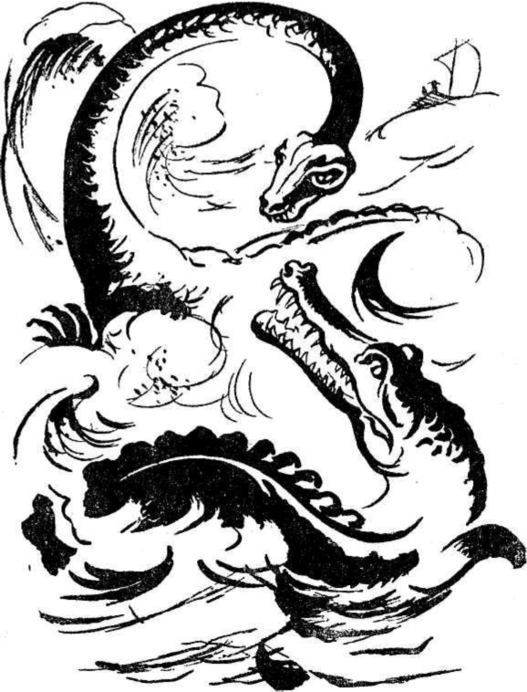

15 Ağustos, Cumartesi - Deniz monoton manzarasını muhafaza ediyor. Henüz hiçbir kara parçası görünmedi. Ufak, sonsuzluklara doğru uzanıyor gibi.
Kafamın içi bir gün önceki rüyanın izleriyle dopdolu.
Dayım, benim gibi rüya görmedi ama, neşesi kaçmış durumda. Dürbünüyle ufku mütemadiyen tarıyor. Kollarını göğsünde çaprazlıyor. Kaşları çatık. Dayımın eski haline döndüğünü fark ediyorum. Yine eskisi gibi sabırsız ve öfkeli. Her olay gibi bunu da not defterine kaydediyorum. Onu bu katı halinden kurtarmak için başımdan büyük bir kazanın geçmesi icap etti. Fakat, iyileştikten sonra eski haline döndü. Acaba neden öfkeleniyor? Yolculuk çok iyi şartlar içinde geçmiyor mu? Sal, şikâyet edilmeyecek bir süratle ilerlemiyor mu?
Dayanamadım, sordum:
- Neyiniz var Dayıcığım? Endişeli görünüyorsunuz?
- Endişeli mi? Asla..
- O halde sabırsızsınız..
- Sabırsız olmamak mümkün mü?.
- Fakat, salın sürati mükemmel değil mi?
- Bunun hiçbir önemi yok. Salın süratinden şikâyetçi değilim.. Denizin büyüklüğünden şikâyetçiyim.
O anda dayımın bir konuşmasını hatırladım. Karşı sahilin seksen veya yüz mil uzunluğunda olduğunu tahmin etmişti. Hâlbuki bu tahminin üç misli uzunluğunda yol kat etmiştik. Hâlâ güney sahilleri görünmemişti.
Kısa bir sessizlikten sonra:
- Gayemizden ayrılmış bulunuyoruz, diye fikrini açıkladı.
Bu seyahati, arzın merkezine ulaşmak için tertip ettik. Derinlere inmeliyiz. Düz yolculuk beni tatmin etmiyor. O kadar uzaktan bir yeraltı gölünde gezinmek için gelmedim. Boşuna vakit kaybediyoruz.
Dayım bu yolculuğa bir eğlence gezisi nazarıyla bakıyordu. Dilimin ucuna gelen sözlere engel olamadım:
- Saknussemm'in takip etmiş olduğu yoldan ayrılmış değiliz ki!..
İşte bütün mesele burada ya.. Acaba Saknussemm'in takip etmiş olduğu yolu mu takip ediyoruz? Saknussemm de bu deniz yolculuğunu yaptı mı? Hansbach'ı kendimize kılavuz seçmekle büyük bir hataya düşmedim ki?
- Fakat buraya kadar gelmekle zararlı sayılmayız ki.. Yeryüzünde hiçbir bilginin görmediğini görmüş bulunuyoruz.
- Bunların hiçbirisi önemli değil Axel.. Bu yolculuğa, bir gayeye ulaşmak için çıktım. Hedefime ulaşmadıkça içim rahat etmeyecektir..
Dayımı öfkelendirmemek için susmayı tercih ettim. Ne yaparsam yapayım, sabırsızlığını önleyemeyeceğimi biliyordum. Saat altıda Hans ücretini istedi. Dayım, anlaşmaya uyarak İzlandalıya bir haftalık ücretini ödedi.
16 Ağustos, Pazar - Kayda değer yeni bir şey yok. Rüzgâr hafifçe sertleşti. Uyandığım zaman ilk işim ışığı kontrol etmek oldu. Elektrik olayının birdenbire ters bir şekil alıp, her tarafın koyu bir karanlığa gömülmesinden korkuyordum. Fakat endişem yersiz. Işık, bir gün önceki parlaklığını muhafaza ediyor. Salın gölgesi sularda menevişleniyor.
Bu denizin sonsuzluğuna ben de inanmağa başlıyorum. Atlas Okyanusundan daha büyük olabilir. Şu anda aksini iddia edemeyiz ki!..
Dayım sık sık iskandil sallandırıyor, iki yüz kulaçlık sağlam bir ipin ucuna en ağır kazmalardan birini bağlayarak, basit bir iskandil yaptı. Bütün uğraşmalarına rağmen dibini bulamadı. İskandili yukarı çekmek çok zor oluyordu.
Son olarak iskandili yukarı çektiğimizde Hans bana kazmanın üzerinde bazı derin izler gösterdi. Kazmanın demir kısmı iki sert cisim arasında kalıp, ezilmiş gibi görünüyor.
Kılavuzun yüzüne sual dolu nazarlarla bakıyorum. Bana:
- Tander! diye cevap veriyor.
Ne dediğini anlamıyorum. Dayıma dönüyorum. O kadar dalgın ki.. Onu uyandırmamayı tercih ediyorum. Tekrar İzlandalının yanına dönüyorum. Hans, parmağını dişlerinin arasına götürüp ısırıyor. Şaşkın tavırla:
- Diş izleri diye mırıldanıyorum ve bir kere daha kazmayı dikkatle tetkik ediyorum. Evet! Bu izler, diş izlerinden başka bir şey olamazlar. Fakat, demirin üzerinde iz bırakabilecek sertlikte dişleri düşünmek bile bana korku veriyor. Acaba, bir gün önce gözü açık olarak gördüğüm rüyadaki canavarlardan biri mi ısırdı bu kazmayı?..
O andan itibaren gözlerimi denizin yüzünden ayıramaz oluyorum. Bütün gün aynı endişeli düşüncelerin tesirinden kurtulamıyorum. Ancak birkaç saatlik bir uykuda sükûnete kavuşabiliyorum.
7 Ağustos, Pazartesi - Senelerce önce okumuş olduğum kitaplardaki bu canavarlara ait bilgileri hatırlamağa çalışıyordum. Bu hayvanlar dünyanın ikinci jeolojik devrinde yaşamışlardı. Tabiat onlara kusursuz organlar vermişti. Buna ilâve olarak, dev yapılıydılar. Sonsuz denecek derecede kuvvetliydiler. Zamanımızdaki timsahlar o devrin aynı sınıfa dâhil hayvanları yanında birer yavru bile sayılmazlar. Bu mukayese, korkuyla ürpermeme sebep oldu. Şimdiye kadar hiçbir insan onları canlı olarak görmedi. İnsanların dünyaya gelişlerinden on asır önce yaşamışlardı. Ancak fosillerini tanıyabiliyoruz.
Hamburg'daki müzede bu hayvanlardan birinin iskeletini görmüş olduğumu hatırlıyorum. Yoksa şimdi aynı hayvanın canlısını mı göreceğim? İmkânsız bir şey bu! bununla beraber, kazmanın demiri üzerindeki izleri başka nasıl izah edebiliriz? Bu izler derin ve koniktiler.
Korkuyla denizin sathına bakıyorum. Bu canavarlardan birinin sala saldırmasından endişe ediyorum.
Dayım da kazmayı tetkik etti. Yüzünün ifadesinden düşüncelerimi paylaştığını anlıyorum. O da gözleriyle denizin yüzünü dikkatle tarıyor.
Öfkeyle içimden «sersem adam» diye geçiriyorum. Denize iskandil sarkıtmasa olmuyor muydu sanki? Derinlerde dolaşan bir canavarın rahatını kaçırıp, dikkatini çekmiş oldu. Üzerimize saldırmazsa çok iyi!»
Endişeyle silâhları gözden geçiriyorum. Hepsinin de mükemmel vaziyette olduğunu görerek, biraz ferahlıyorum. Dayım bu hareketimi görüyor ve aynı fikirde olduğunu belli ediyor.
İşte denizin yüzünde kuvvetli bir dalgalanma oldu. Tehlike çok yakınımızda. Dikkatli olmak lâzım.
18 Ağustos, Sah - Akşam oldu. Daha doğrusu uykudan gözlerimiz kapanmağa başladı. Bu devamlı aydınlıkta akşamın olduğunu ancak kronometremizle, gözkapaklarımızın ağırlaşması belli ediyor. Hans yine dümende. O nöbetteyken uyuyorum.
İki saat sonra, şiddetli bir sarsıntıyla uyanıyorum. Sal, büyük bir dalgayla havalanarak, kırk elli metre uzağa savruluyor. Dayım heyecanla bağırıyor:
- Ne oldu? Karaya mı oturduk?
Hans, dört yüz veya beş yüz metre uzakta, zaman zaman dalıp çıkan bir karaltıyı parmağıyla işaret ediyor. Ben de bakıyor ve korkuyla bağırıyordum:
- Dev bir domuz balığı!...
Dayım:
- Evet! Diyor. Yanında da korkunç büyüklükte birdeniz kertenkelesi!..
Dehşete kapılarak tekrar haykırıyorum:
- Biraz ilerde de dev bir timsah!.. Kocaman ağzını görüyor musunuz?. Dişleri kazmadan çok daha büyük!... Bakın!... Bakın!... Şimdi denize dalıyor!...
Dayım heyecanla:
- Şurada da bir balina var!.. Muazzam yüzgeçlerini görüyor musunuz?.. Havaya fışkırttığı sulara bak!.
Hakikaten sular, iki sütun halinde çok yükseklere kadar çıkıp, tekrar denize dökülüyordu. Bu deniz canavarlarının karşısında heyecan, şaşkınlık ve korkuyla taşlaşmış durumdayız. Hepsi de hayalimizden dahi geçirmeğe cesaret edemeyeceğimiz büyüklükte.. Bunlardan birisi, tek bir diş darbesiyle salı paramparça edebilir.. Hans, dümeni rüzgâra karşı çevirmeğe çalışıyor. Tehlikeli bölgeden süratle uzaklaşmak istiyor. Fakat, kaçmağaçalıştığımız tarafta başka canavarlar beliriyor. Dev bir deniz kaplumbağasıyla, korkunç büyüklükte bir deniz yılanı.. Her birinin boyu en aşağı on metre var.. Kaçmak imkânsız.. Bu sonuncular süratle birbirlerine sokuluyorlar. Birbirlerinin etrafında hızla dönüyorlar.. Tüfeklerden birini elime alıyorum.. Acaba kurşun onların derisine tesir eder mi? İkisinin de vücudu kemikten daha sert kabuklarla kaplı..

Korkuyla üçümüzün dilleri tutulmuş vaziyette.. Bütün canavarlar denize daldılar.. Ortada timsahla deniz yılanı kaldı.. İşte birbirlerine yaklaşıyorlar.. Ateş etmek istiyorum. Hans bana engel oluyor. İki canavar, salın iki yüz metre uzağından süratle geçiyor ve birbirlerine saldırıyor. Bizi görecek halde değiller.
İşte mücadele başladı. Saldan altı yüz metre uzaktalar. Boğuşmayı bütün teferruatıyla takip edebiliyoruz.
İki canavarı seyrederken, diğerlerinin de bu boğuşmaya katılacaklarından korkmaya başlıyorum. Nitekim arada sırada bunlardan birkaçının başı suyun üstünde görünüp, kayboluyor. Bunları Hans'a gösteriyorum. Başını menfi manada sallayarak:
- Tva! diyor. Dayım tercüme ediyor:
- Yalnız ikisinin mücadele edeceğini söylüyor. Dayım mücadeleyi dürbünle takip ediyor ve heyecanla bağırıyor:
- Hakkı var Hans'ın..
-. Canavarlardan birinin burnu deniz domuzunun burnu, başı deniz kertenkelesinin başı, dişleri timsah dişleri.. Bu görünüşü bizi yanılttı.. Bu, tufandan önceki devre ait en korkunç hayvanlardan biri.. Bu iki iktiozorüs'ten başka bir şey değil!..
- Pekâlâ, öteki ne?
- İkincisi de, kaplumbağa kabuğu içinde bir denizyılanı!.. Bir pleziozorüs!..
Hans'ın haklı olduğunu ben de kabul ediyorum. Denizin sathını sadece iki hayvan dalgalandırıyor. Bunların birbirleriyle ezelî iki düşman oldukları belli. İkisi de birbirinden korkunç.. Bulunduğum yerden iktozorüs'ün kanlı gözlerini görebiliyorum. Bu gözlerin her biri insan başı büyüklüğünde.. Çok süratle hareket edebiliyor. Boyu en aşağı otuz metre.. Ağzı korkunç büyüklükte.. Tabiiye bilginlerine göre en az yüz seksen dişi olması lâzım.. Diğeri de korkunçluk bakımından ondan geri kalır görünüşte değil.. Birbirlerine öfkeyle saldırıyorlar. Meydana gelen dalgalar sala kadar geliyor. En az yirmi defa devrilme tehlikesi atlatıyoruz. Bu sırada korkunç sesler duyuluyor. Bazen gövdeler birbirine karışıyorlar. Birini diğerinden ayırt etmek imkânsız.. Galip gelecek olanın çılgınca hareketlerinden de endişe duyuyorum.
Aradan bir, iki saat geçiyor. Mücadele bütün hızıyla devam ediyor. Canavarlar zaman zaman sala yaklaşıp, uzaklaşıyorlar. Parmaklarımız silâhların tetiklerinde, ateş etmeğe hazır; vaziyette bekliyoruz.
Birdenbire canavar da suya dalıyor, görünmez oluyor. Bu sırada denizin ortasında bir girdap meydana geliyor. Acaba kavga denizin derinliklerinde mi devam edecek?
İşte pleziozorüs denizin üstüne fırlıyor. Canavarın ölüm derecesinde yaralı olduğu belli. Sırtındaki kaplumbağa kabuğunu göremiyorum. Uzun ve kanlı boynu suyun üstünde çırpmıyor. Hepimiz ıslanıyoruz. Bu çırpınma uzunca devam ediyor. En sonunda canavarın hareketleri yavaşlıyor ve duruyor. Denizin sathında kımıldamadan yatışından öldüğünü anlıyoruz.
Acaba öteki canavar nereye gitti?. Tekrar görünecek mi? Belki denizin altındaki yuvasına dönmüştür. Suyun üstüne bir daha çıkmadı.